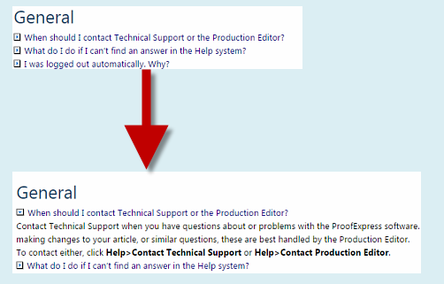
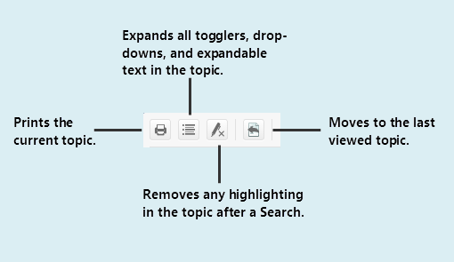

The Online Help system is easy to use. If you've used a website, you can navigate Help with ease.
The Contents and Index tabs help you find topics. The Glossary tab contains definitions of terms we use in ArticleExpress.
The Help system features a full-text search. That means that while we've added keywords to topics, you can also use other terms to search.
The Help system highlights each term producing a hit in the topic, making it easy to find. Use the Remove highlighting button (see below) to view without highlights.
Some topics contain links to other topics. Some also contain togglers. Togglers hide some text until you click to view it. We use togglers in the FAQ. When you click the on-screen text, more text is revealed.

Above the topic window is a row of buttons you can use.

usehelp.htm | Copyright © 2015 Dartmouth Journal Services All Rights Reserved.